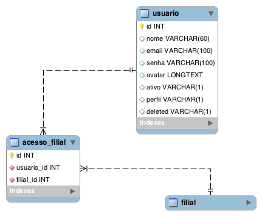
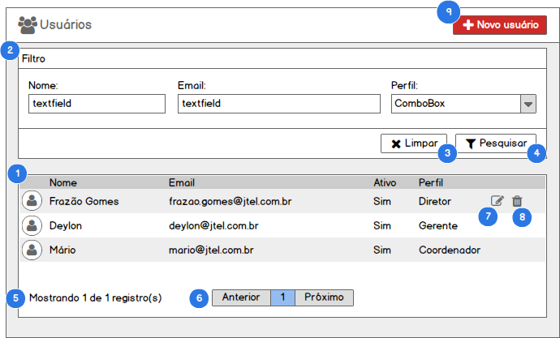
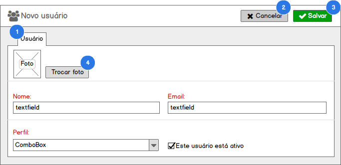
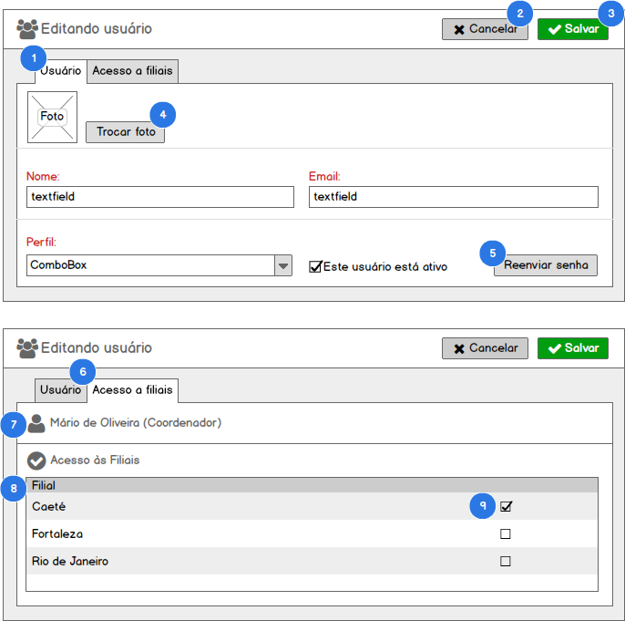

Funcionalidade: Administração de Usuários#
Como usuário com perfil (1. Diretor, 2. Gerente) no SisGeop, eu quero gerenciar os usuários que terão acesso ao SisGeop.
Modelo de dados#

Tabelas relacionadas#
| Tabela | Descrição |
|---|---|
| usuario | Armazena os registros de usuários do sistema |
| filial | Armazena os registros de filiais da JTEL no sistema. |
| acesso_filial | Armazena os vínculos entre um usuário e as filiais a que ele tem acesso |
Listar Usuários#
Contexto
- Para acessar essa funcionalidade o usuário acessa o menu Administração > Usuários;
- O sistema deverá exibir a lista de todos os registros cadastrados quando o usuário entrar na tela de acordo com o perfil de acesso às filiais do usuário logado;
- Para usuários com perfil de diretor, todos os registros de usuário serão exibidos;
PROTÓTIPO#

1. LISTA DE USUÁRIOS#
QUANDO o usuário acessar a tela de listagem de usuários
ENTÃO o sistema exibirá os todos os usuários cadastrados no sistema em uma tabela com as colunas definidas no protótipo seguindo a mesma ordem de exibição de acordo com o seu perfil de acesso nas filiais.
2. FILTRO DE USUÁRIOS#
QUANDO o usuário preencher os campos do formulário Filtro e clicar no botão Pesquisar
ENTÃO o sistema irá aplicar o filtro desejado na lista de usuários, retornando apenas usuários que combinam com o grupo de filtros aplicado
Regras
O formulário Filtro pode ser expandido ou encolhido sempre ao clicar na barra de títulos do formulário. E o status encolhido/expandido deverá ficar salvo na sessão do usuário na máquina, mantendo uma memória sempre que o usuário utilizar o SisGeop na mesma máquina.
3. LIMPAR FILTRO#
QUANDO o usuário clicar no botão Limpar
ENTÃO o sistema limpa o formulário Filtro e atualiza a lista de usuários
4. APLICAR FILTRO#
QUANDO o usuário clicar no botão Pesquisar
ENTÃO o sistema aplica o filtro preenchido pelo usuário no formulário Filtro e atualiza a lista de usuários
5. TOTALIZAÇÃO DE REGISTROS#
QUANDO o usuário acessar a lista de usuários
ENTÃO o sistema apresenta o resultado da consulta
E a totalização de registros com a mensagem Mostrando x de y registros
6. PAGINAÇÃO#
QUANDO o usuário acessar a lista de usuários
ENTÃO o sistema apresenta o resultado da consulta
E um componente de paginação que possibilita navegar entre as páginas dos resultados
REGRAS devem ser exibidos em cada página, 25 registros
7. EDITAR FILIAL#
QUANDO o usuário clicar na opção Editar
ENTÃO o sistema aciona o caso Editar Usuário
8. EXCLUIR USUÁRIO#
QUANDO o usuário clicar na opção Excluir
ENTÃO o sistema aciona o caso Excluir Usuário
9. NOVO USUÁRIO#
QUANDO o usuário clicar no botão Novo Usuário
ENTÃO o sistema aciona o caso Incluir Usuário
Incluir Usuário#
Contexto
- Para acessar essa funcionalidade o usuário aciona o botão Novo usuário a partir da tela de listagem de usuários;
- O sistema deverá exibir o formulário para a criação de um novo usuário;
PROTÓTIPO#

1. FORMULÁRIO DE INCLUSÃO DE USUÁRIO#
QUANDO o usuário acionao o botão Novo Usuário a partir da tela de listagem de usuários
ENTÃO o sistema exibe o formulário de inclusão de usuário
2. CANCELAR INCLUSÃO DE USUÁRIO#
QUANDO o usuário clicar no botão Cancelar
ENTÃO o sistema sai da tela de inclusão de usuário e retorna para a tela de listagem de usuários
3. SALVAR USUÁRIO#
QUANDO o usuário clicar no botão Salvar
ENTÃO o sistema valida o preenchimento do formulário
E Salva os dados preenchidos no formulário criando um novo registro de usuário no banco de dados
E Exibe a mensagem "Registro incluído com sucesso" e redirecionando o usuário para a edição do usuário criado
3.1 Formulário inválido#
CASO o formulário não esteja devidamente preenchido
ENTÃO o sistema apresenta a seguinte mensagem "Os campos destacados são de preenchimento obrigatório"
E destaca os campos que precisam ser preenchidos para o usuário
3.2 Email de usuário duplicado#
CASO o email informado no registro que o usuário estiver inserindo já esteja em utilização por outro usuário
ENTÃO o sistema exibirá a seguinte mensagem "Já existe um usuário com este email"
E interromperá a inserção do registro do usuário.
4. TROCAR FOTO#
QUANDO o usuário clicar no botão Trocar foto
ENTÃO o sistema exibe janela para seleção de um arquivo de imagem na máquina do usuário
4.1 Formato inváldio#
CASO o usuário selecione um arquivo que não seja um formato de imagem válido (png, jpg, gif, bmp)
ENTÃO o sistema exibe a mensagem __"Formato de arquivo inválido. As extensões permitidas são (png, jpg, gif e bmp)
4.2 Formáto válido#
CASO o usuário selecione um arquivo que seja um formato de imagem válido
ENTÃO o sistema atualiza a foto do usuário na tela de inclusão de usuários
GERAÇÃO DE SENHA AUTOMÁTICA#
QUANDO o usuário criar um novo registro de usuário
ENTÃO o sistema irá gerar automaticamente uma senha para o usuário criado
E enviará a senha desse usuário para o email cadastrado
OBRIGATORIEDADE DE CAMPOS#
O sistema deverá exibir de forma destacada os campos do formulário que são de preenchimento obrigatório
Editar Usuário#
Contexto
- Para acessar essa funcionalidade o usuário aciona o botão Editar a partir da tela de listagem de usuários;
- O sistema deverá exibir o formulário para a edição de um usuário carregando todos os dados cadastrados para o usuário nos respectivos campos de edição do formulário;
PROTÓTIPO#

1. FORMULÁRIO DE EDIÇÃO DE USUÁRIO#
QUANDO o usuário aciona o botão Editar na tela de listagem de usuários
ENTÃO o sistema exibe o formulário de edição de usuários com os dados do usuário selecionado carregados no formulário para edição.
2. CANCELAR EDIÇÃO DE USUÁRIO#
QUANDO o usuário clicar no botão Cancelar
ENTÃO o sistema sai da tela de edição de usuário e retorna para a tela de listagem de usuários
3. SALVAR USUÁRIO#
QUANDO o usuário clicar no botão Salvar
ENTÃO o sistema valida o preenchimento do formulário
E Salva os dados preenchidos no formulário atualizando o registro do usuário no banco de dados
E Exibe a mensagem "Registro atualizado com sucesso" e redirecionando o usuário para a listagem de usuários
3.1 Formulário inválido#
CASO o formulário não esteja devidamente preenchido
ENTÃO o sistema apresenta a seguinte mensagem "Os campos destacados são de preenchimento obrigatório"
E destaca os campos que precisam ser preenchidos para o usuário
3.2 Email de usuário duplicado#
CASO o email que o usuário estiver inserindo já esteja em utilização por outro usuário
ENTÃO o sistema exibirá a seguinte mensagem "Já existe um usuário com este nome"
E interromperá a inserção do registro do usuário.
4. TROCAR FOTO#
QUANDO o usuário clicar no botão Trocar foto
ENTÃO o sistema exibe janela para seleção de um arquivo de imagem na máquina do usuário
4.1 Formato inváldio#
CASO o usuário selecione um arquivo que não seja um formato de imagem válido (png, jpg, gif, bmp)
ENTÃO o sistema exibe a mensagem __"Formato de arquivo inválido. As extensões permitidas são (png, jpg, gif e bmp)
4.2 Formáto válido#
CASO o usuário selecione um arquivo que seja um formato de imagem válido
ENTÃO o sistema atualiza a foto do usuário na tela de edição de usuários
5. REENVIAR SENHA#
QUANDO o usuário clicar no botão Reenviar senha
ENTÃO o sistema exibe a seguinte mensagem para o usuário "Deseja reenviar a senha deste usuário?"_
5.1 Confirmar reenvio da senha#
CASO o usuário clique no botão Sim
ENTÃO o sistema reenvia a senha do usuário por email
E fecha a mensagem de confirmação
5.2 Cancelar reenvio de senha#
CASO o usuário clique no botão Não
ENTÃO o sistema fecha a mensagem de confirmação sem reenviar a senha para o usuário editado.
6. ABA DE ACESSO A FILIAIS#
QUANDO o usuario clicar na aba Acesso a filiais
ENTÃO o sistema deverá carregar uma lista com as filiais que o usuário editado tem acesso selecionadas
7. IDENTIFICAÇÃO DO USUÁRIO EDITADO#
O sistema irá exibir o nome do usuário editado ao lado do ícone de identificação do usuário juntamente com o perfil deste usuário para que o usuário logado consiga identificar qual é o registro do usuário que está tendo o acesso às filiais definido.
8. LISTA DE FILIAIS#
O sistema irá exibir a relação de todas as filiais cadastradas na listagem de filiais
9. ALTERAR ACESSO A FILIAL#
QUANDO o usuário clicar no checkbox na linha de uma filial
9.1 Conceder acesso#
CASO o checkbox seja Marcado
ENTÃO o sistema salva o acesso do usuário editado na filial selecionada
9.2 Revogar acesso#
CASO o checkox seja Desmarcado
ENTÃO o sistema exclui o acesso do usuário editado na filial selecionada
9.3 Acesso do próprio usuário logado#
QUANDO o usuário editado for o mesmo usuário logado no sistema
ENTÃO os checkbox deverão vir desabilitados não permitindo a sua alteração
9.4 Acesso do usuário com perfil DIRETOR#
QUANDO o usuário tiver o perfil de Diretor
ENTÃO por default ele sempre terá acesso a todas as filiais marcado
OBRIGATORIEDADE DE CAMPOS#
O sistema deverá exibir de forma destacada os campos do formulário que são de preenchimento obrigatório
Excluir Usuário#
Contexto
- Para acessar essa funcionalidade o usuário aciona o botão Excluir a partir da tela de listagem de usuários;
- A exclusão de um usuário deverá ser uma exclusão Lógica de forma que o registro da despesa nunca será fisicamente excluído do banco de dados;
QUANDO o usuário acionar o botão Excluir em uma linha na lista de usuários
ENTÃO o sistema exibe uma janela de confirmação com a mensagem "Deseja realmente excluir o registro selecionado?"
QUANDO o usuário confirmar a exclusão do registro
ENTÃO o sistema efetua a desativação Lógica do registro do usuário
E atualiza a lista de usuários de acordo com o filtro previamente definido pelo usuário
Excluir o próprio usuário#
QUANDO o usuário tentar excluir um registro do seu próprio usuário
ENTÃO o sistema exibe a mensagem "Você não pode excluir seu próprio usuário"